모의고사 성적 분석 시스템은 진학 프로그램에서 내려받은 모의고사 성적 엑셀 파일을 불러와 학년 전체 통계, 상위권 분포, 선택과목 비율, 수능 최저학력기준 충족 인원, 회차별 성적 변화를 보여 주는 웹 도구입니다.
| 웹 | https://luminousky.com/score-reporter/ 에 접속하면 바로 씁니다. 설치와 로그인이 없고, 늘 최신 버전입니다. |
|---|---|
| PC(오프라인) | 소개 페이지(https://luminousky.com/teacher-utility-kit/score-reporter/)의 「오프라인 PC 버전」에서 압축 파일을 받아 해제하고 index.html을 엽니다. 인터넷이 닿지 않는 교내망에서도 쓸 수 있습니다. |
아래 진학 프로그램에서 모의고사 성적을 엑셀로 내려받습니다. 회차마다 파일 하나를 받습니다.
| 진학 프로그램 | 메뉴 경로 |
|---|---|
| 대교협 | 자료관리 → 자료등록 → 수능/모의고사 성적 → [선택회차 입력내용 엑셀다운] |
| 유니브 | 성적관리 → 수능.모의고사관리 → 수작업 입력/수정/확인 → 학급별 점수 입력 및 조회 → [엑셀 파일 만들기] |
| 김영일 | 학생관리 → 모의수능/수능성적등록 → [수능CSV받기] |
| 꿈꾸GO | 성적관리 → 성적 → 수능(모의) → [엑셀 다운로드] |
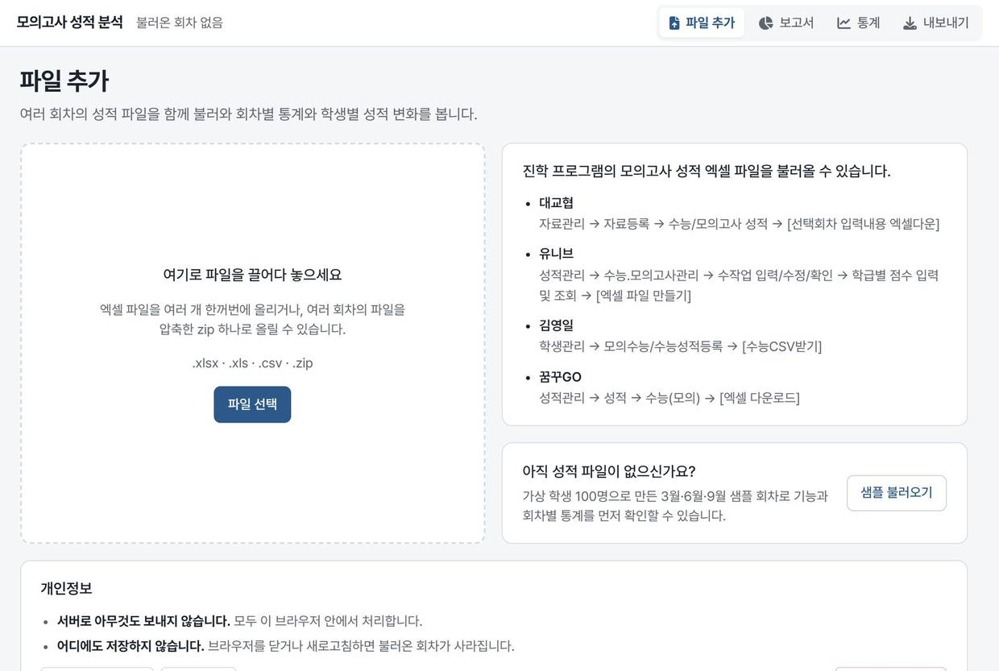
왼쪽 상자에 파일을 끌어다 놓거나 파일 선택을 누릅니다. 여러 파일을 한꺼번에 선택해도 됩니다. 파일을 올리면 화면이 아래의 불러오기 표로 내려갑니다.
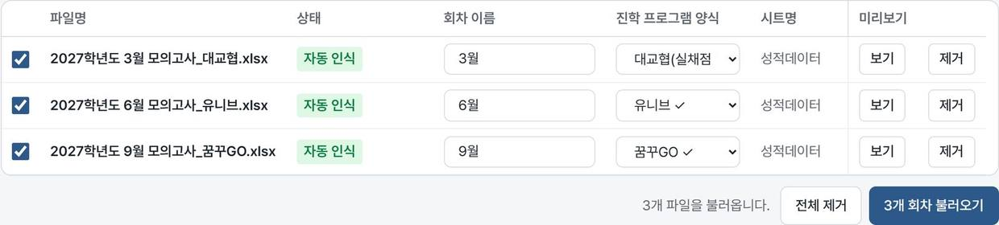
| 열 | 설명 |
|---|---|
| 상태 | 자동 인식: 헤더가 한 양식과 정확히 맞았습니다. 확인 필요 · 후보 여럿: 양식을 직접 선택합니다. 비밀번호 필요: 비밀번호를 입력하고 확인을 누릅니다. 범위 밖 점수 N개: 점수 범위를 벗어난 칸이 있습니다. 대개 양식을 잘못 선택했을 때 나옵니다. 마우스를 올리면 어느 열인지 보입니다. |
| 회차 이름 | 「3월」, 「2026-03」, 「사설」처럼 자유롭게 적습니다. 회차는 이름의 자연 순서(1월 → 2월 → … → 10월)로 놓입니다. |
| 진학 프로그램 양식 | 자동 인식된 양식에는 ✓ 표시가 붙습니다. 다른 양식을 직접 선택할 수도 있습니다. |
| 시트명 | 시트가 여러 개인 파일은 시트를 선택합니다. |
| 미리보기 | 보기를 누르면 파일의 앞부분 다섯 줄을 보여 줍니다. 양식이 맞는지 확인할 때 씁니다. |
확인이 끝나면 N개 회차 불러오기를 누릅니다. 체크를 끈 파일은 불러오지 않습니다. 비밀번호가 같은 파일이 여럿이면 표 위의 칸에 한 번 입력하고 모두 확인을 누릅니다.
상단바 가운데에는 불러온 회차가 순서대로 놓입니다. 회차를 누르면 보고서와 내보내기가 그 회차로 바뀝니다. 지금 보는 회차에는 버튼이 붙습니다.
| ◀ ▶ | 회차 순서를 앞뒤로 옮깁니다. 통계 화면의 가로축이 이 순서를 따릅니다. |
|---|---|
| ✎ | 회차 이름을 바꿉니다. |
| ✕ | 그 회차를 지웁니다. 원본 파일에는 영향이 없습니다. |
오른쪽 탭으로 파일 추가 · 보고서 · 통계 · 내보내기 화면을 오갑니다. 좁은 화면에서는 탭에 아이콘만 보입니다.
지금 선택한 회차의 보고서입니다. 보고서 PDF 인쇄로 전체를 인쇄합니다.
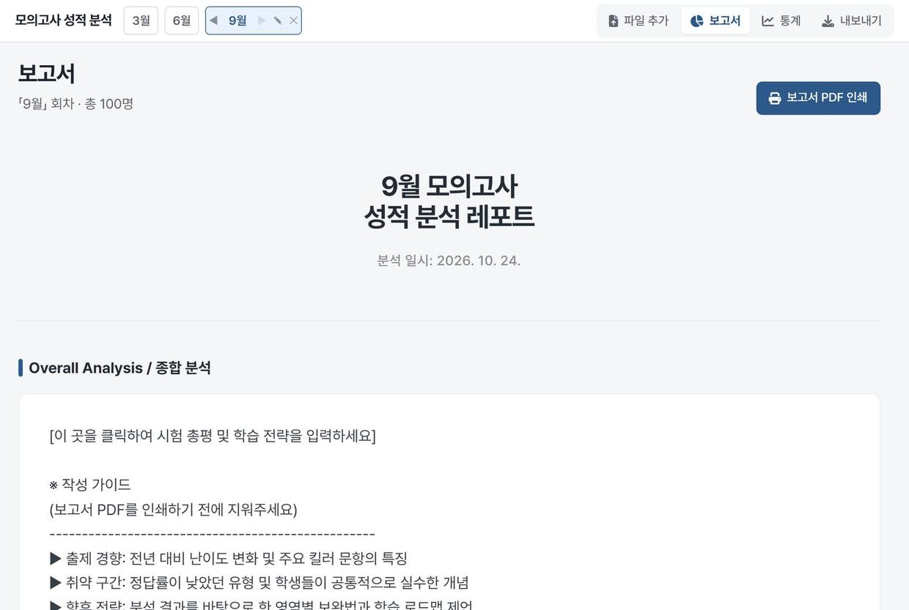
제목은 처음에 「(회차 이름) 모의고사 성적 분석 레포트」로 채워집니다. 제목과 종합 분석 칸을 클릭하면 직접 고칠 수 있습니다. 적은 글은 회차마다 따로 남고, 다른 회차로 바꿨다가 돌아와도 그대로 있습니다(브라우저를 닫으면 사라집니다). 작성 가이드 문구는 인쇄 전에 지웁니다.
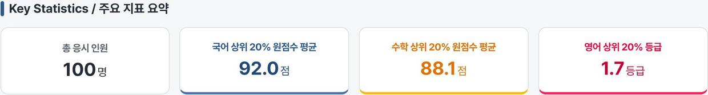
합산 점수(국어 + 수학 + 탐구평균) 순으로 상위 학생을 보여 줍니다. 표시 인원을 바꿀 수 있고, 같은 점수는 공동 순위(1, 1, 3)로 매기며 N위와 동점인 학생은 모두 넣습니다. 줄을 누르면 학생 성적표가 열립니다.
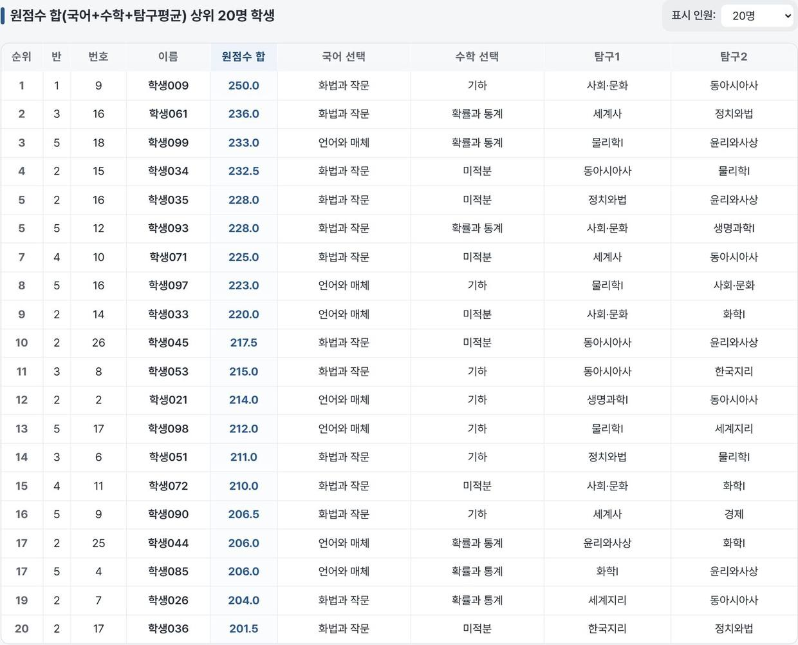
합산 점수를 급간 폭에 따라 나눈 인원입니다. 막대나 표의 인원 숫자를 누르면 그 급간의 학생 명단이 열립니다.
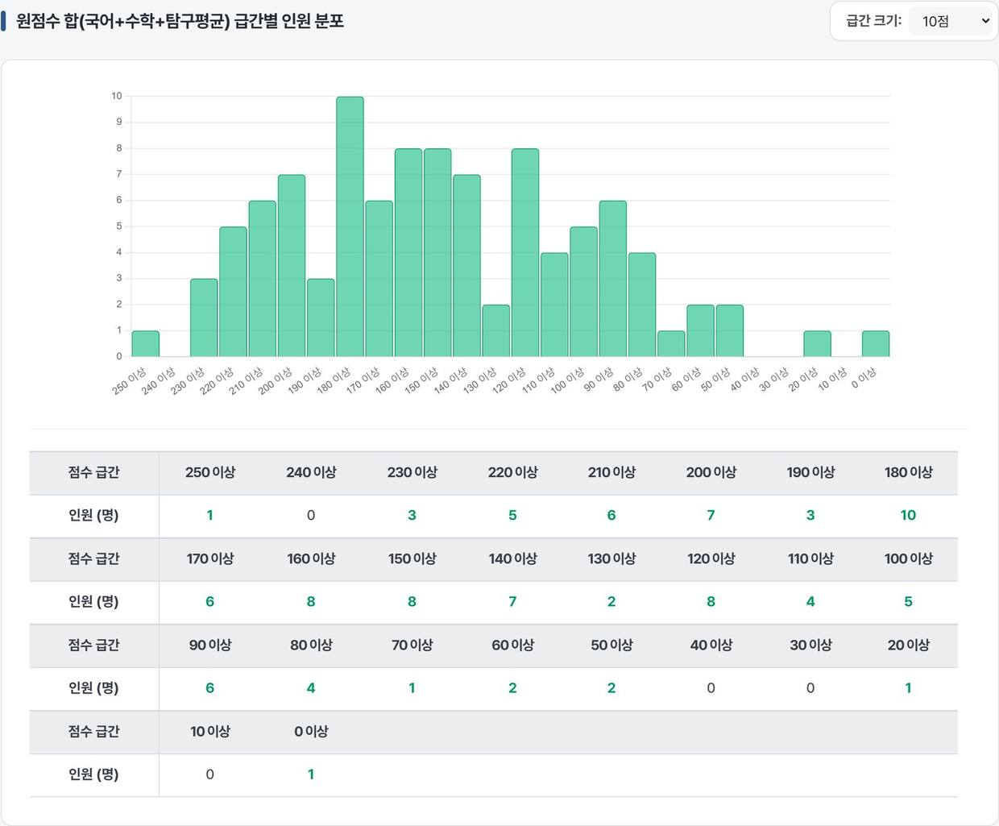
국어·수학·탐구 선택과목별 인원과 비율, 평균 점수와 평균 등급입니다. 과목을 누르면 그 과목을 선택한 학생 명단이 열립니다.
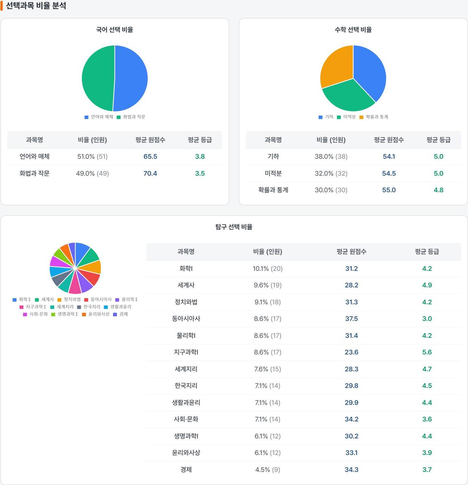
국어·수학·영어·탐구1·탐구2 등급으로 2합 ~ 5합 조건마다 충족 인원을 누적으로 보여 줍니다. 숫자를 누르면 해당 학생과 합에 쓰인 과목이 나옵니다. 전교 석차 기준과 학급 기준 명단도 함께 봅니다. 이 표의 등급 합은 합산 점수 규칙과 무관합니다.
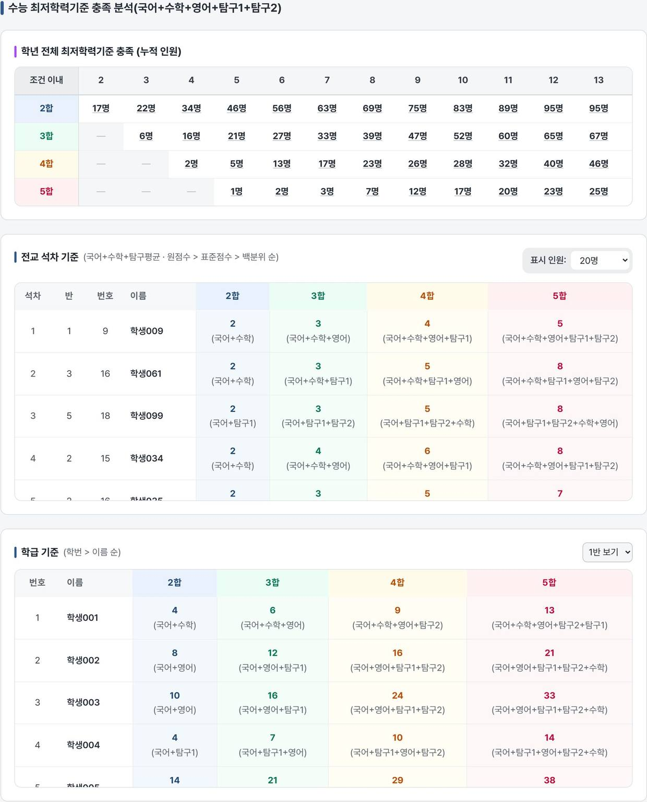
학생 명단 표는 열 헤더를 눌러 정렬하고, 줄을 누르면 학생 성적표가 열립니다. 과목별 성적 분포는 과목마다 등급·백분위·표준점수 분포를 막대로 보여 주며, 막대를 누르면 그 구간의 학생 명단이 나옵니다.
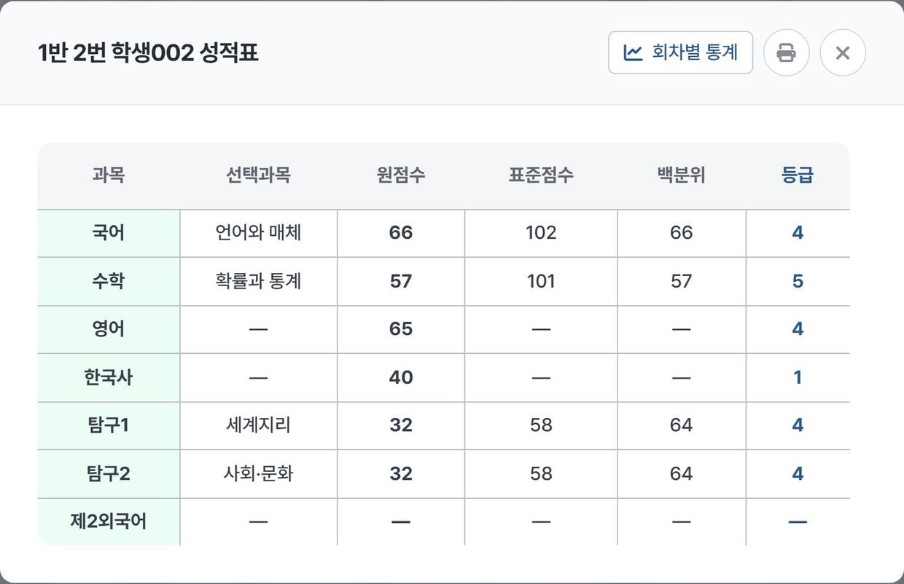
보고서와 통계의 학생 줄을 누르면 열립니다. 과목마다 선택과목, 원점수, 표준점수, 백분위, 등급을 보여 줍니다. 값이 없는 칸은 —로 표시합니다.
불러온 모든 회차를 상단바 순서대로 놓고 비교합니다. 회차가 하나여도 쓸 수 있습니다.
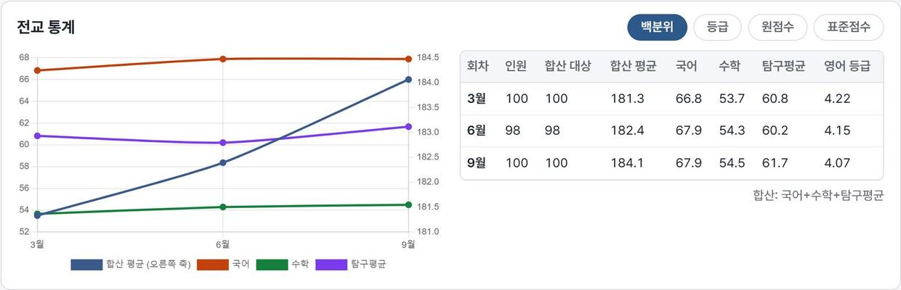
학급과 학생을 차례로 선택합니다. 학급을 바꾸면 그 학급의 첫 학생이 바로 보입니다. 학번 또는 학년·반·번호가 같으면 회차마다 이름 표기가 달라도 같은 학생으로 잇습니다.
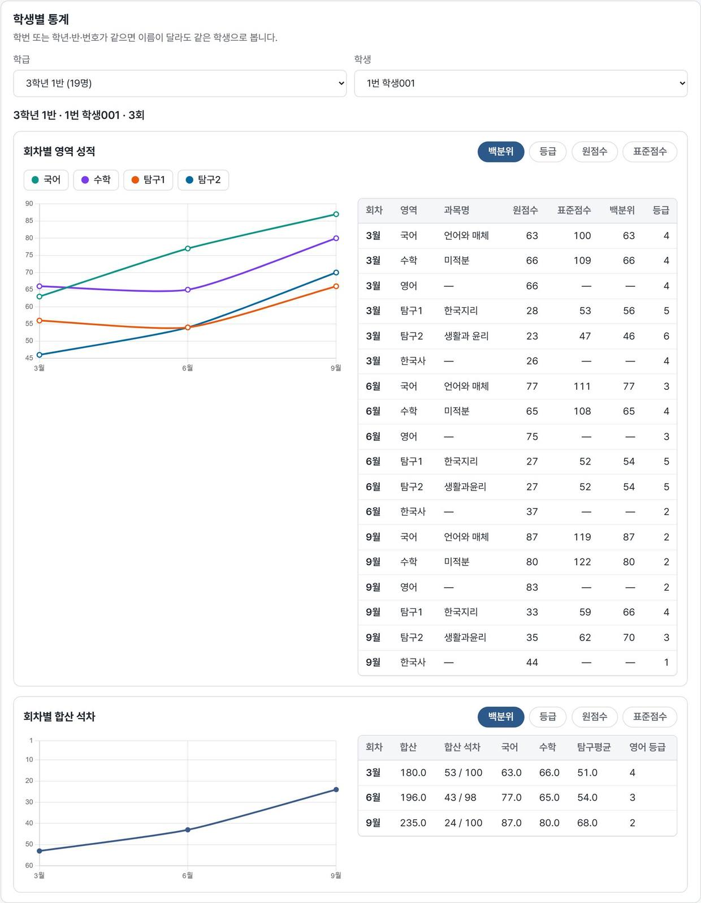
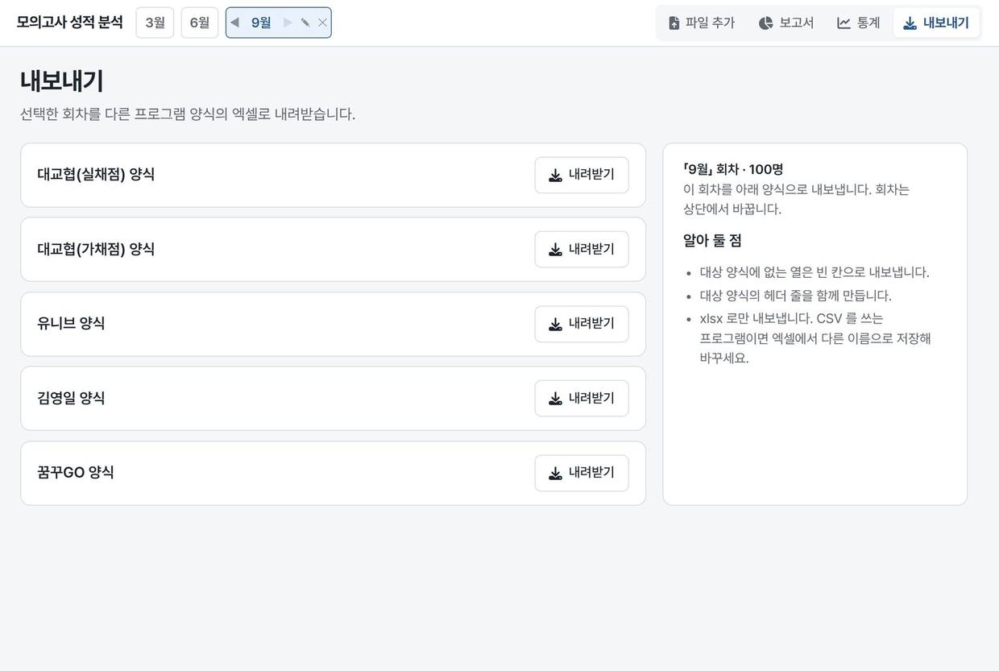
지금 선택한 회차를 다른 진학 프로그램 양식의 엑셀 파일로 내려받습니다. 예를 들어 유니브 양식으로 불러온 성적을 대교협 양식으로 바꿀 수 있습니다. 다른 회차를 내보내려면 상단바에서 회차를 바꿉니다.
| 빈칸 | 결시·미응시로 보고 그 과목의 평균·분포·순위에서 뺍니다. 0점으로 바꾸지 않습니다. |
|---|---|
| 0점 | 0점으로 읽습니다. 0 하나만 보고 미응시로 판단하지 않습니다. |
| 모두 0점 | 한 학생의 점수가 모두 0이면 그 학생은 미응시로 보고 점수를 모두 빈칸으로 둡니다. |
| 과목 응시 여부 | 과목명이 아니라 점수로 판단합니다. 「미응시」 「결시」 「미선택」 「-」 같은 과목명은 빈 과목명으로 읽습니다. |
| 합산 점수 | 국어 + 수학 + 탐구평균. 탐구평균은 기준(원점수·표준점수·백분위)마다 따로 구합니다. 탐구가 하나면 그 값, 둘이면 평균입니다(반올림하지 않음). 국어나 수학이 없으면 합산하지 않습니다. |
| 동점 | 공동 순위 1, 1, 3으로 매깁니다. |
| 숫자로 읽는 값 | 숫자 하나와 그 뒤의 「점」 또는 「%」까지입니다. 「1,234」 「1등급」 「85abc」 같은 값은 빈칸으로 처리합니다. |
| 표시 | 값이 없는 칸은 —로 표시합니다. 소수는 사사오입합니다. |
헤더가 어느 양식과도 정확히 맞지 않은 파일입니다. 보기로 앞부분을 확인하고 진학 프로그램 양식을 직접 선택합니다. 진학 프로그램에서 내려받은 뒤 열을 지우거나 고친 파일이면 원본을 다시 받는 편이 안전합니다.
대부분 다른 양식을 선택했을 때 나옵니다. 꼬리표에 마우스를 올려 어느 열인지 확인하고 양식을 바꿉니다.
개인정보 보호를 위해 성적을 저장하지 않습니다. 원본 파일을 다시 불러옵니다. 여러 회차를 자주 본다면 회차 파일을 zip 하나로 압축해 두면 한 번에 올릴 수 있습니다.
학번 또는 학년·반·번호로 잇습니다. 김영일 양식은 반·번호가 없고 대교협·꿈꾸GO 양식은 학번이 없어, 이 둘 사이는 이어지지 않을 수 있습니다. 한 회차 안에 같은 반·번호(또는 학번)가 둘이면 그 학생은 잇지 않고 화면 위에 안내합니다.
가채점 파일처럼 그 회차에 표준점수가 없으면 표준점수 기준 값은 —로 둡니다. 원점수 기준으로 봅니다.